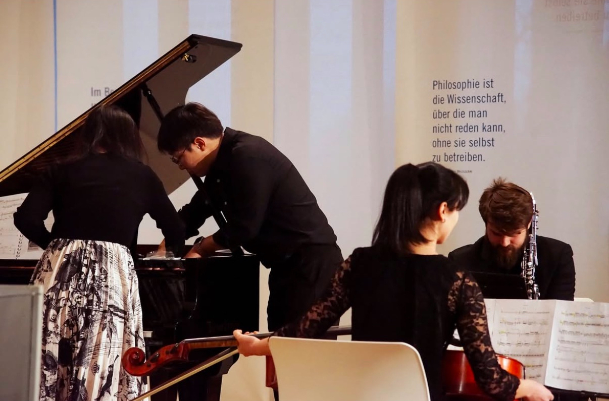
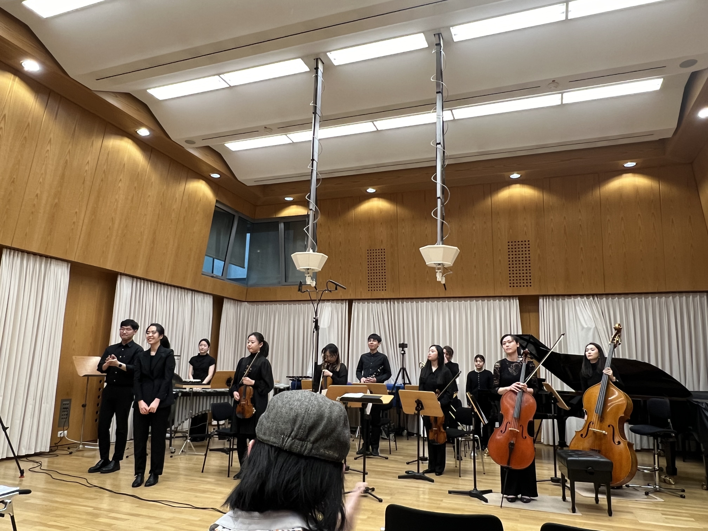
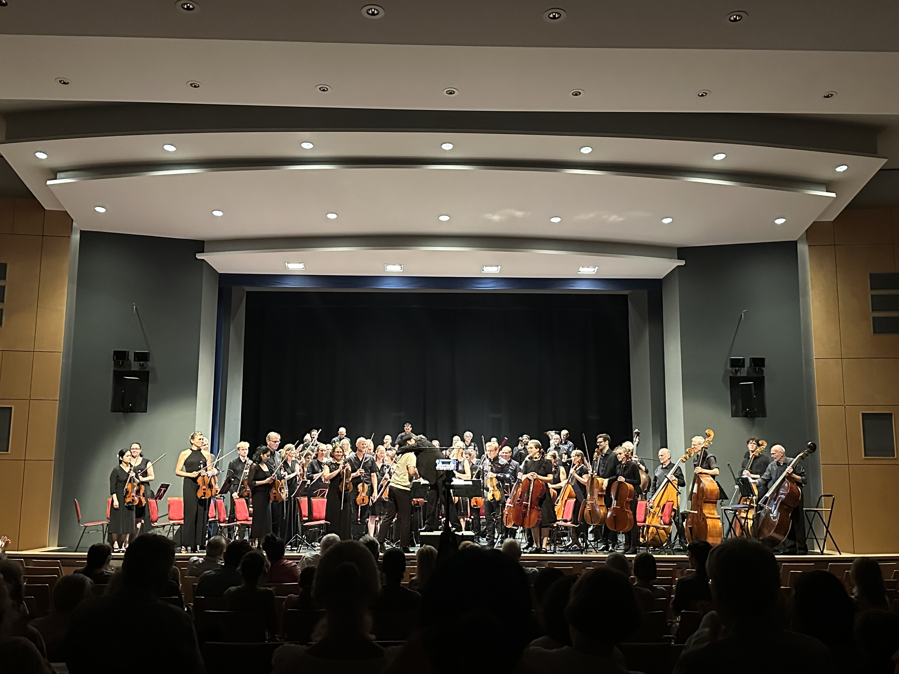
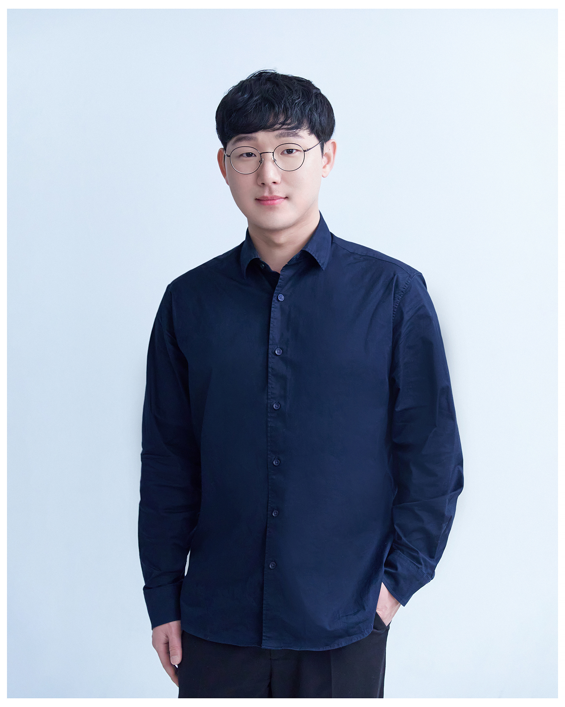

Rutsch
String quartet exploring glissando, friction, and continuously shifting sonic surfaces.
View worksComposer · New Media · Live Electronics
A composer working between contemporary music, electroacoustic sound, audiovisual performance, and philosophical inquiry.
Rather than understanding sound as a self-contained phenomonen, Taekyu Yoon approaches it as an open field of relations. His works investigate how sound expands into ohter domains of experience, generating new connections between listening, memory, space and imagination.
작곡가 윤태규
윤태규(Taekyu Yoon)는 서울과 독일을 기반으로 현대음악과 전자음악, 뉴미디어 작곡을 중심으로 활동하는 작곡가이다. 한양대학교 작곡과 학사과정과 동대학원 석사과정을 졸업하고, 라이프치히 국립 음악대학 작곡과 석사과정 졸업 후 만하임 국립 음악대학에서 박사과정과 뉴미디어작곡 석사과정을 졸업했다.
Selected Works
String quartet exploring glissando, friction, and continuously shifting sonic surfaces.
View worksFour-channel electronic work transforming soundscapes.
Explore cataloguePiano solo work connecting St.Thomas, Paint of Diego Velaquez, and Inside of Piano.
Listen and readEvents
Current dates include a sound installation collaboration with Nationaltheater Mannheim, a new media composition presentation, and performances in Germany and Italy.
View upcoming events



Awards
Catalogue